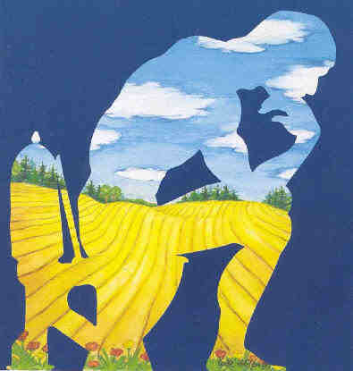

"Tænkeren", "The Thinker", "Der Denker" (
Copyright BACKLUND ApS)
Welcome to BACKLUND - Your partner regarding Sustainable Sanitary
Solutions Recycling Resources (Ecological Sanitation) - from Waste to
Resources, Sustainable Solutions for Waste Water Treatment,
Multifunctional Willow Systems and Plantations producing Biomass Energi
and Phytoremediation of Cadmium in soils. Furthermore selected
environmentaly important components, systems and solutions.
- Advice
regarding Ecological Sanitation in Eco Villages and Off Grid Houses and
areas not connected to sewers as Summer Cottages, Allotment Gardens and
including PeeCycling/BeerCycling from Festivals, Arrangements, Camping
Sites, Sports Facilities
- Advice regarding
Zero Discharge Willow Evapotranspiration Systems and Multifunctional
Short Rotation Willow Plantations Combining producing Energy Willow with
Phytoremediation of Soils from Cadmium
- Advice regarding Public Private Cooperation between
Municipalities, Wastewater Treatment Plants, Central Heating Plants and
Farmers enabling Closing the Loop between Wastewater, Energy Willow and
Energy Production
- Advice assisting Consultants and
Authorities as experts in our specialized areas
- Marketing Game Changers in the
process from a Metabolic Rift to Metabolic Shift
- Lectures at Universities, Courses,
Seminars, Workshops, Organizing Site Visits in Denmark and Sweden.
- Participation in National and
International Projects
BACKLUND was established in 1986
contributing to a Metabolic Shift away from the Metabolic Rift handling
among others Streams of Water & Nutrients.
Member of Sustainable Sanitation Alliance
(SuSanA)